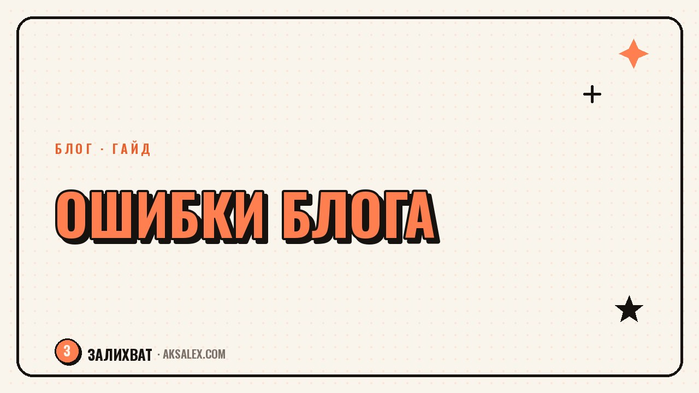

Newbie blogging mistakes and how to avoid them

The first months of blogging look almost the same for everyone: a burst of enthusiasm, a dozen videos in a row, then a dip in reach and disappointment. Usually it's not about algorithms or luck, but a handful of recurring mistakes that are easy to spot from the outside. Let's break down what most often goes wrong and how to fix it without rebuilding your whole blog.
Mistake one - no clear hook at the start
Many newcomers open their video with a greeting and an introduction, even though a viewer has maybe a couple of seconds before scrolling on. If the first frames don't contain a question, a conflict, or an unexpected fact, the video loses most of its audience before the topic is even revealed.
It's easy to check: look at your retention stats. If there's a sharp drop in the first 3-5 seconds, it's almost always the weak opening, not the topic itself.
Mistake two - inconsistent posting
Five videos in a week, then a month-long pause — a classic burnout scenario. Algorithms and followers both love predictability: an account that posts consistently grows more slowly, but more steadily, than one with bursts and pauses.
- Pick a realistic rhythm — 2 videos a week consistently beats 7 in a burst followed by silence
- Prepare content in batches a few days ahead, not on the day you publish
- Use neural networks for script drafts to cut down prep time
Mistakes three and four
Copying someone else's style one-to-one
Watching successful creators is useful, but copying their delivery word for word isn't. Audiences quickly pick up on unoriginality, and while the algorithm doesn't distinguish an original from a copy by meaning, it does react to engagement — which is usually lower for the copy.
Ignoring comments and feedback
Comments are free audience research. Newcomers often post and walk away, never replying or reading reactions, and end up missing signals about which topics land and which don't.
Table: mistake and quick fix
| Mistake | Quick fix |
|---|---|
| Weak hook | Rewrite the first 3 seconds of the script, open with a question or a conflict |
| Inconsistency | Build a 2-week schedule ahead and prepare content in batches |
| Copying a style | Find your own delivery through 5-10 attempts at different tones |
| Ignoring comments | Reply to at least 5 comments after every post |
Mistake five - content without structure
A video without a clear structure — setup, substance, conclusion — comes across as a stream of consciousness, even if the topic is good. The viewer gets lost halfway through and leaves before the main point.
Good structure forgives weak delivery, while weak structure kills even a great idea.
A simple way to check your structure is to write the script out point by point in advance instead of improvising on camera. This doesn't kill spontaneity — it gives it something to stand on.
How to fix mistakes one at a time
Don't try to overhaul everything at once — take one mistake at a time, work on it for 2-3 weeks, and watch the stats. If early-video retention goes up after you change your hooks, that confirms the hook was the issue, and you can move on to the next item.
This step-by-step approach looks slower from the outside, but it gives you a clear cause-and-effect link between a change and a result, instead of a pile of random tweaks.
Frequently asked questions
Which mistake should I fix first?
The hook at the start of the video — it's the most common point where you lose the audience, and it's the easiest to fix without reworking the whole format.
How long does it take to see the effect of the fixes?
Usually 2-3 weeks of consistent posting with the change in place, so the stats show a stable difference rather than a random spike.
Is it okay to model yourself after someone else's successful blog?
You can study the structure and pacing, but copying the wording and manner word-for-word isn't worth it — audiences pick up on unoriginality.
What should I do if reach drops despite posting regularly?
Check the hook, the structure, and how well the topic matches audience expectations one at a time, rather than changing everything at once — that makes it easier to find the cause.
Do neural networks help avoid these mistakes?
They speed up scriptwriting and posting schedules, but the structure, the hook, and the lively delivery are still the author's responsibility.
not by hand